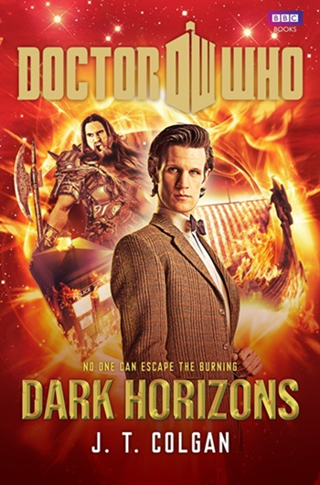

|
Dark Horizons
|
BASIC PLOT DOCTOR COMPANIONS MATERIALISATION CIRCUIT Pg 115 On the surface of the ocean. Pg 159 The TARDIS dematerialises from underwater and then immediately rematerialises in the same place. Pg 161 On the bottom of the ocean floor. Pg 184 Inside a sandy cave. PREPARATORY READING CONTINUITY REFERENCES Pg 38 "He took out the psychic paper. He looked at it for a long time, but it remained frustratingly blank. 'Runic society. Gah!' he said to himself." The End of the World et al. The Doctor encountered a similar problem with the psychic paper in The King's Dragon. But see Continuity Cock-Ups Pg 139 "As he said it, the entire room rang to the sound of the TARDIS's cloister bell tolling." Logopolis. Pg 151 The Consciousness of Arill briefly manifests as the Doctor's previous regenerations. Pg 160 "He didn't have to breathe yet - as Martha Jones had once discovered his lung capacity was extraordinary,but a respiratory bypass system could only work for so long." Martha was the tenth Doctor's companion (Smith and Jones et al), while the respiratory bypass system appeared in Pyramids of Mars. Pg 169 "Back in the TARDIS, Henrik stumbled over an enormous crinoline - which he did not recognise - and was on the point of giving up in despair when he spied a huge orange suit - a spacesuit, although hecould never have known it." This is the style of spacesuit the Doctor wears in The Impossible Planet/The Satan Pit and The Waters of Mars. Pg 172 "Yet somehow he managed to override them, as he noticed behind the light the figure of an astronaut. No. He thought. Not here. Not again. Astronauts coming from the sea he hardly dared remember." The Impossible Astronaut/Day of the Moon. Pg 179 "I thought the swiming pool was leaking again." The Invasion of Time et al. Pg 185 "He took a deep breath, then hung a perception filter on the TARDIS's external phone." This is very similar to what he does to himself, Martha and Jack in The Sound of Drums. Pg 300 "Now, look to the side. But very slowly and in a relaxed fashion." The reveal of the perception filter is very similar to that in The Sound of Drums. OLD FRIENDS AND OLD ENEMIES NEW FRIENDS AND NEW ENEMIES Also Eoric and Brogan, who have been transformed into particles in the Aurora Borealis.
CONTINUITY COCK-UPS PLUGGING THE HOLES [Fan-wank theorizing of how to fix continuity cock-ups] FEATURED ALIEN RACES FEATURED LOCATIONS Pg 25 A Scottish island. IN SUMMARY - Robert Smith? |
|
 |